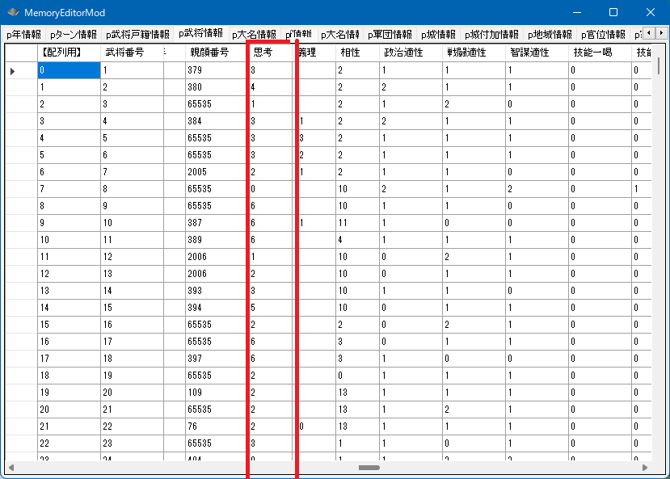
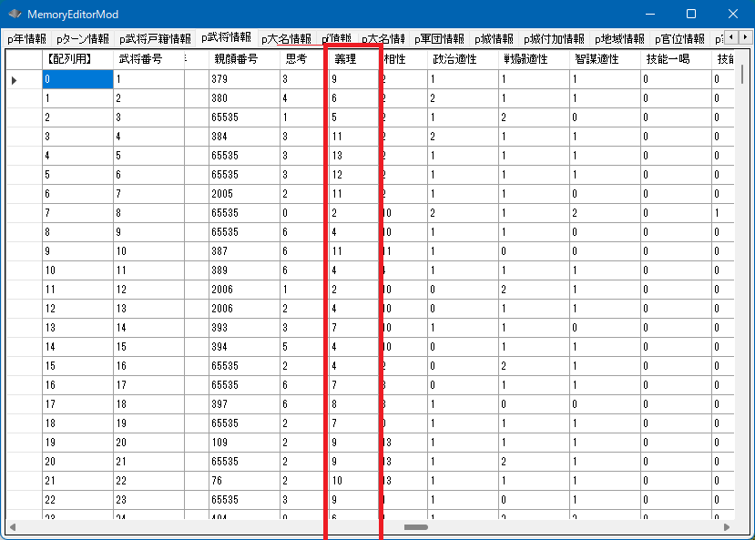
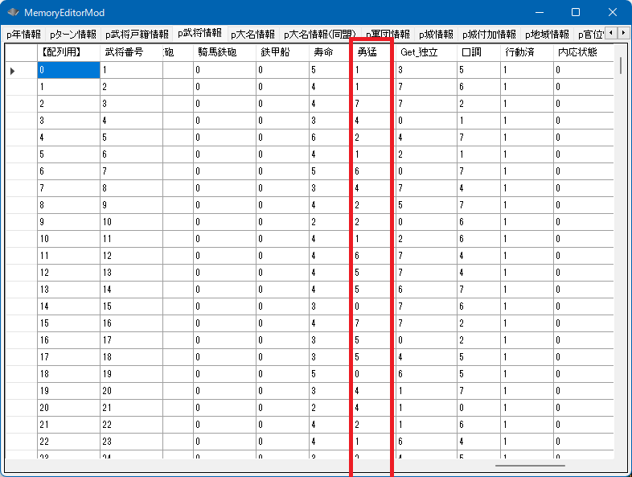
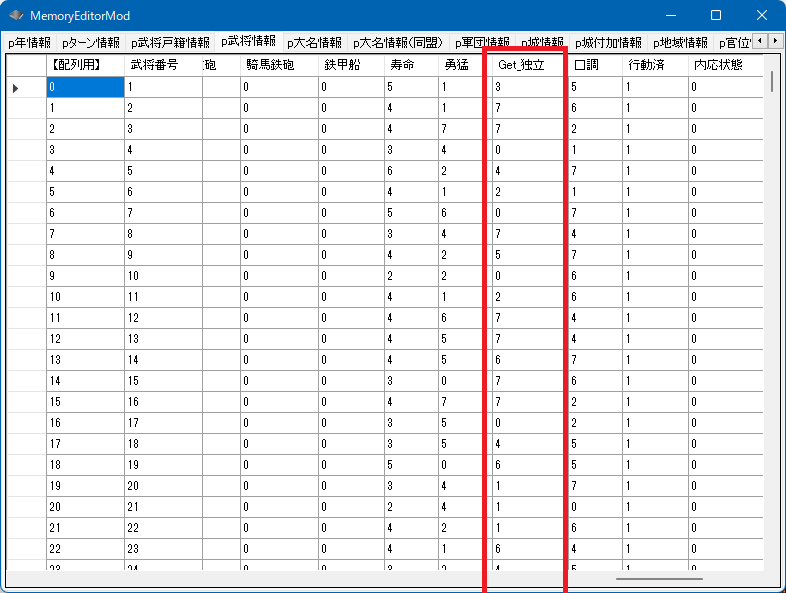
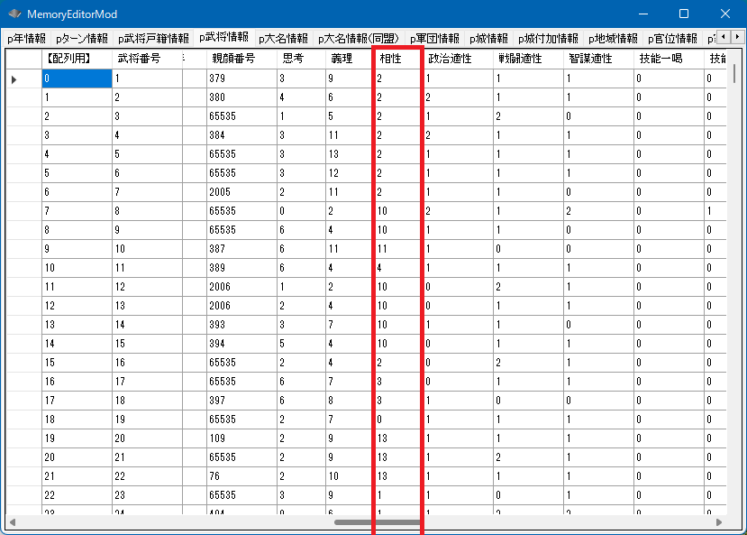

忠誠

p武将情報[ix].忠誠
０～100の値を取ります。0は内応や裏切りをしやすい状態です。
一方、やや裏切りやすい性格であっても忠誠100があれば、いきなり裏切るといったことは起きにくいと言えます。
void カスタム::On_相場変更直前() {
for (int iBushouID = 0; iBushouID < 最大数::武将情報::配列数; iBushouID++) {
// 一般の「宿老・家老・部将・侍大将・足軽頭」、そして「軍団長」 が対象
if (p武将戸籍情報[iBushouID].状態 == 状態::現役 || p武将戸籍情報[iBushouID].状態 == 状態::軍団長) {
// 義理が4以下の武将は相場が切り替わるごとに（＝季節ごとに）、忠誠が5減っていく
if (p武将情報[iBushouID].義理 <= 4) {
int 忠誠 = p武将情報[iBushouID].忠誠; // アンダーフローを防止するため、一旦 int で受け取る
忠誠 = 忠誠 - 5;
if (忠誠 < 0) {
忠誠 = 0;
}
p武将情報[iBushouID].忠誠 = 忠誠;
}
// 義理が11以上の武将は相場が切り替わるごとに（＝季節ごとに）、忠誠が5増える
else if (p武将情報[iBushouID].義理 >= 11) {
int 忠誠 = p武将情報[iBushouID].忠誠; // オーバーフローを防止するため、一旦 int で受け取る
忠誠 = 忠誠 + 5;
if (忠誠 > 100) {
忠誠 = 100;
}
p武将情報[iBushouID].忠誠 = 忠誠;
}
}
}
}
思考

p武将情報[ix].思考
「思考::名将～思考::その他」に対応します。
全員の思考を表示
void カスタム::On_相場変更直前() {
for (int iBushouID = 0; iBushouID < 最大数::武将情報::配列数; iBushouID++) {
string 姓名 = Get_名字(iBushouID) + Get_名前(iBushouID);
デバッグ出力 << 姓名 << "の思考は、";
switch (p武将情報[iBushouID].思考) {
case 思考::名将:
デバッグ出力 << "名将";
break;
case 思考::猛将:
デバッグ出力 << "猛将";
break;
case 思考::堅剛:
デバッグ出力 << "堅剛";
break;
case 思考::厭戦:
デバッグ出力 << "厭戦";
break;
case 思考::内政:
デバッグ出力 << "内政";
break;
case 思考::調略:
デバッグ出力 << "調略";
break;
case 思考::一般:
デバッグ出力 << "一般";
break;
case 思考::姫《史実》:
デバッグ出力 << "姫《史実》";
break;
case 思考::その他:
デバッグ出力 << "その他";
break;
}
デバッグ出力 << "タイプです。" << endl;
}
}
特定の武将の思考を変える
void カスタム::On_プレイヤ担当ターン《メイン画面》() {
int iBushouID = Get_武将番号【配列用】(顔番号::武田晴信);
if (0 <= iBushouID && iBushouID < 最大数::武将情報::配列数) {
p武将情報[iBushouID].思考 == 思考::猛将;
デバッグ出力 << "武田信玄の思考を猛将にしました" << endl;
}
}
義理
0～15の値を取り、0なら不義理でかなり寝返りやすい、15なら義理堅く寝返りにくいい
p武将情報[ix].義理

義理の値を参照
void カスタム::On_プレイヤ担当ターン《メイン画面》() {
for ( int iBushouID = 0; iBushouID < 最大数::武将情報::配列数; iBushouID++ ) {
string 姓名 = Get_名字(iBushouID) + Get_名前(iBushouID);
int 義理 = p武将情報[iBushouID].義理;
デバッグ出力 << 姓名 << "の義理は" << 義理 << "です。" << endl;
}
}
特定の武将を不義理にする
void カスタム::On_相場変更直前() {
int iBushouID = Get_武将番号【配列用】(顔番号::武田晴信);
if (0 <= iBushouID && iBushouID < 最大数::武将情報::配列数) {
p武将情報[iBushouID].義理 = 0;
}
}
勇猛
勇猛は0～7の値を取る。
「思考::猛将」と類似している。この値が高いほど好戦的であり、
特に軍団長以上になった際、勇猛値が高いと戦争を好む傾向となる。

p武将情報[ix].勇猛
勇猛の値を参照
void カスタム::On_プレイヤ担当ターン《メイン画面》() {
for ( int iBushouID = 0; iBushouID < 最大数::武将情報::配列数; iBushouID++ ) {
string 姓名 = Get_名字(iBushouID) + Get_名前(iBushouID);
int 勇猛 = p武将情報[iBushouID].勇猛;
デバッグ出力 << 姓名 << "の勇猛は" << 勇猛 << "です。" << endl;
}
}
特定の武将を勇猛にする
void カスタム::On_相場変更直前() {
int iBushouID = Get_武将番号【配列用】(顔番号::武田晴信);
if (0 <= iBushouID && iBushouID < 最大数::武将情報::配列数) {
p武将情報[iBushouID].勇猛 = 7;
}
}
独立
勇猛は0～7の値を取る。
独立は主に「旗あげ」に影響する。軍団長の際に大名として独立してしまうことにも影響があるかもしれないが、
真偽の程は不明である。

int Get_独立(int 武将番号【配列用】)
void Set_独立( int 武将番号【配列用】, int 独立値 )
独立の値を参照
void カスタム::On_相場変更直前() {
for ( int iBushouID = 0; iBushouID < 最大数::武将情報::配列数; iBushouID++ ) {
string 姓名 = Get_名字(iBushouID) + Get_名前(iBushouID);
int 独立 = Get_独立(iBushouID);
デバッグ出力 << 姓名 << "の独立" << 独立 << "です。" << endl;
}
}
特定の武将を旗揚げしやすくする
void カスタム::On_相場変更直前() {
int iBushouID = Get_武将番号【配列用】(顔番号::明智光秀);
if (0 <= iBushouID && iBushouID < 最大数::武将情報::配列数) {
Set_独立(iBushouID, 7);
}
}
相性

p武将情報[ix].相性
int Get_相性差(int 相性値Ａ, int 相性値Ｂ)
int Get_武将相性差(int 武将Ａ番号【配列用】, int 武将Ｂ番号【配列用】)
相性差は円環状のリング
各武将には「0～15」の相性値が用意されています。
これは全体として下記イメージのよにリング上に配置されており、数値の高低ではなく、
上図のように、まさに「中心からの方向」のような意味です。
逆の方向の数値だと、相性が悪い、近い方向の数値だと、相性が良い、ということです。

ただ相性値を表示するだけの例
void カスタム::On_相場変更直前() {
for (int iBushouID = 0; iBushouID < 最大数::武将情報::配列数; iBushouID++) {
// 勲功が問題となる、現役や軍団長ならば...
if (p武将戸籍情報[iBushouID].状態 == 状態::現役 || p武将戸籍情報[iBushouID].状態 == 状態::軍団長) {
int 相性 = p武将情報[iBushouID].相性;
デバッグ出力 << Get_名字(iBushouID) + Get_名前(iBushouID) << "の相性値は" << 相性 << "です" << endl;
}
}
}
１年に一度、春に、仕えている大名の相性値へと１つ近づくという、やや複雑な例
void カスタム::On_相場変更直前() {
// １年に一度、春に、仕えている大名の相性値へと１つ近づく処理
if (p年情報.季節 == 季節::春) {
for (int iBushouID = 0; iBushouID < 最大数::武将情報::配列数; iBushouID++) {
// 相性が問題となる、現役や軍団長ならば...
if (p武将戸籍情報[iBushouID].状態 == 状態::現役 || p武将戸籍情報[iBushouID].状態 == 状態::軍団長) {
// 自分自身の大名を得る
int iDaimyoID = p武将情報[iBushouID].所属大名【大名番号】 - 1;
if (0 <= iDaimyoID && iDaimyoID < 最大数::大名情報::配列数) {
int 大名のBushouID = p大名情報[iDaimyoID].大名【武将番号】 - 1;
if (0 <= 大名のBushouID && 大名のBushouID < 最大数::武将情報::配列数) {
int 大名の相性値 = p武将情報[大名のBushouID].相性;
int 自分の相性値 = p武将情報[iBushouID].相性;
if (大名の相性値 != 自分の相性値) {
// プラスとマイナス、どちらかに１つ動かして、大名との相性に近づくほうへと移動する
// ０～１５の循環になっているのだから、「16で割った余り」とすることで常に循環に出来る
int 相性値↑ = (自分の相性値 + 1) % 16;
int 相性値↓ = (自分の相性値 - 1) % 16;
// 相性値に+1 してみた場合と、相性値に-1してみた場合の相性差の変化を探る
int 相性値↑の場合の差 = Get_相性差(大名の相性値, 相性値↑);
int 相性値↓の場合の差 = Get_相性差(大名の相性値, 相性値↓);
// +1した場合、と-1した場合で、+1した方が大名と相性が良くなるなら
if (相性値↑の場合の差 < 相性値↓の場合の差) {
p武将情報[iBushouID].相性 = 相性値↑;
}
else {
p武将情報[iBushouID].相性 = 相性値↓;
}
}
}
}
}
}
}
}
武将同士の相性
武将同士の相性については、武将 - 二人の関係 を参照してください。
口調

口調は「セリフ」の言い回しにのみ影響し、コマンド等の実行結果には影響しません。
p武将情報[ix].口調
口調は、「口調::無口」～「口調::一般」に対応します。
口調の値を参照
void カスタム::On_相場変更直前() {
for ( int iBushouID = 0; iBushouID < 最大数::武将情報::配列数; iBushouID++ ) {
string 姓名 = Get_名字(iBushouID) + Get_名前(iBushouID);
デバッグ出力 << 姓名 << "の口調は";
int 口調 = p武将情報[iBushouID].口調;
switch(口調) {
case 口調::無口:
デバッグ出力 << "無口";
break;
case 口調::礼儀:
デバッグ出力 << "礼儀";
break;
case 口調::粗暴:
デバッグ出力 << "粗暴";
break;
case 口調::高貴:
デバッグ出力 << "高貴";
break;
case 口調::生意気:
デバッグ出力 << "生意気";
break;
case 口調::威厳:
デバッグ出力 << "威厳";
break;
case 口調::饒舌:
デバッグ出力 << "饒舌";
break;
case 口調::一般:
デバッグ出力 << "一般";
break;
}
デバッグ出力 << "です。" << endl;
}
}
特定の武将の口調を変更する
void カスタム::On_相場変更直前() {
int iBushouID = Get_武将番号【配列用】(顔番号::武田晴信);
if (0 <= iBushouID && iBushouID < 最大数::武将情報::配列数) {
p武将情報[iBushouID].口調 = 口調::高貴;
}
}
より詳細を知るには...
「武将 － 性格」に関する主な所は以上となります。
詳しくは「武将情報型.h」や「武将情報列挙.h」を参照してください。